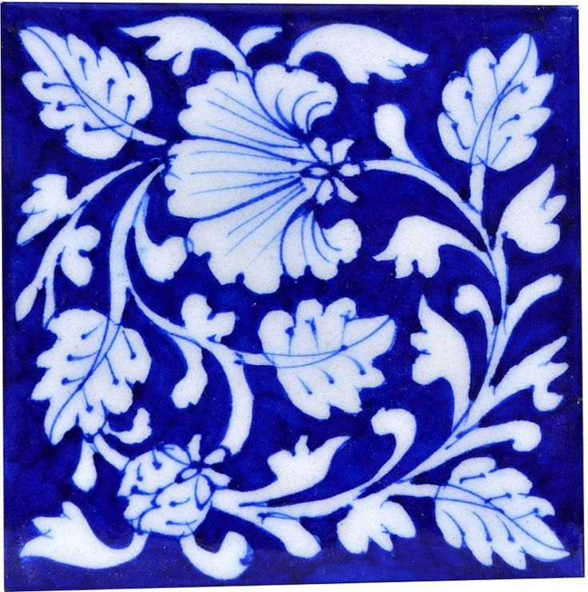
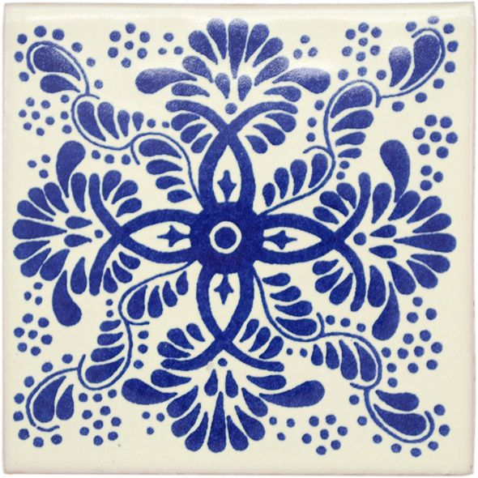
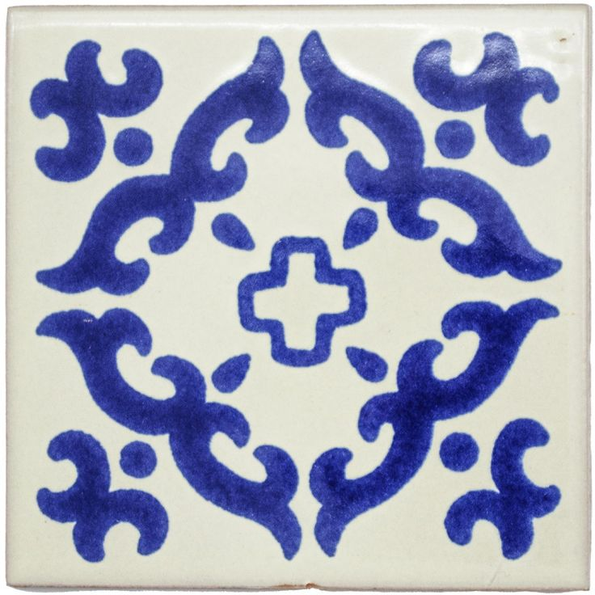
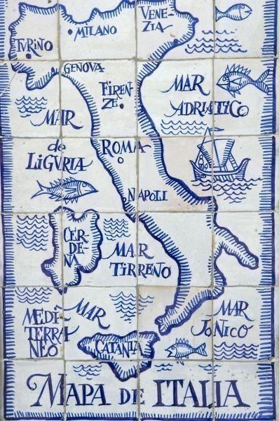
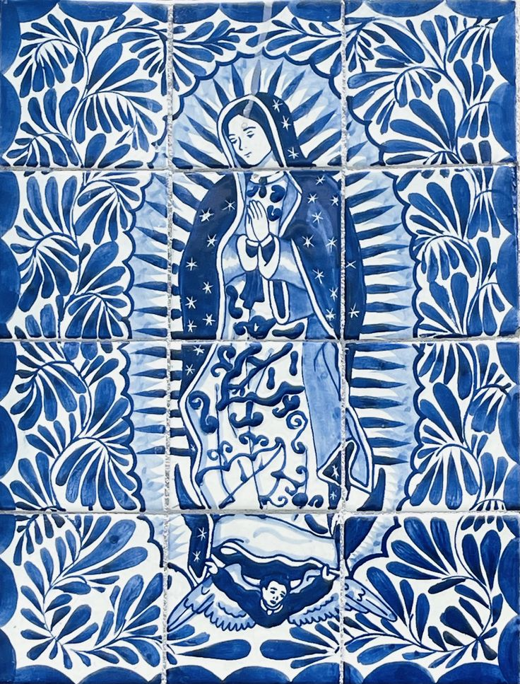
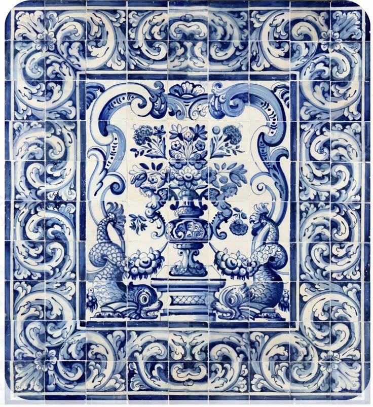
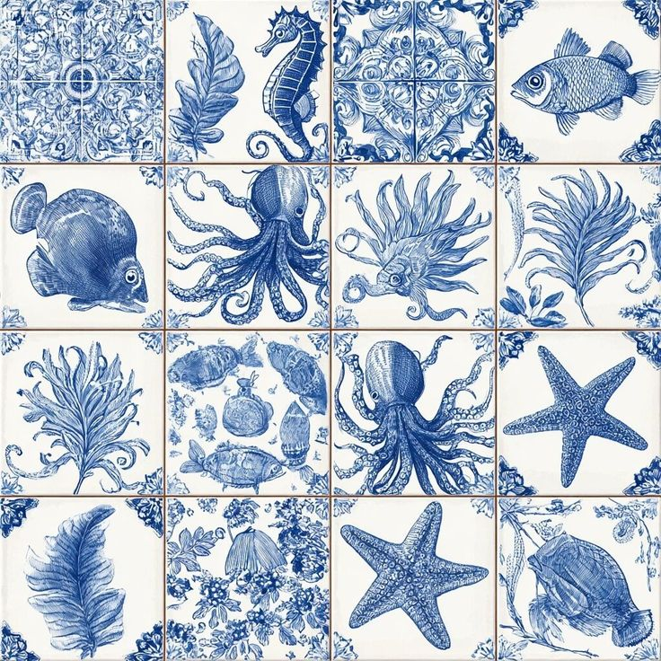

This animation is called fade, where images will fade downward in a loop. The speed is a bit more quicker in terms of fading in and out. The colors on this page are mainly dark blue and the inspiration is the tiles displayed. These tiles are decorative tiles and around the industrial era, these kind of tiles began to be mass produced and afforatable. Although this style originated (or thought to be originated in Europe, these style of tiles were seen in Central American.